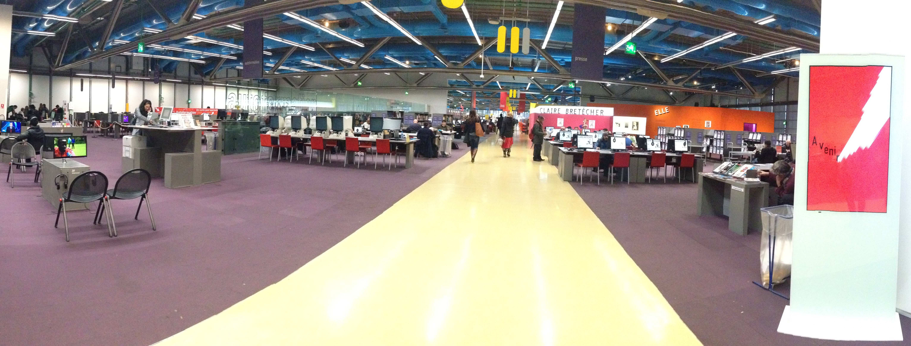

Présentation de la bibliothèque du centre Pompidou

Au centre Pompidou, on retrouve deux bibliothèques:
- la bibliothèque publique d’information
- la bibliothèque Kandinsky
La bibliothèque publique d’information (Bpi)
La bibliothèque, a été créée en même temps que le centre Georges Pompidou, soit en 1960.
La bibliothèque est ouverte le lundi, mercredi, jeudi et vendredi de 12h à 22h mais est fermée le mardi. Elle est également ouverte le week-end de 11h à 22h.
On peut pointer le fait qu’il s’agit d’une bibliothèque très grande qui tient sur trois étages.
Il s’agit d’une bibliothèque publique, donc tout le monde (quel que soit son âge) peut y aller pour se cultiver, lire divers livres, travailler, faire des recherches GRATUITEMENT.
On peut trouver tout type de livre, y compris encyclopédie et dictionnaire. Toutefois on peut regretter le fait que toute consultation se fait sur place, nous ne pouvons pas faire d’emprunt.
La bibliothèque a également mis en place une salle informatique accessible à l’aide d’un ticket qu’on récupère auprès de l’accueil, et on peut y rester pour une durée de 40 minutes.
Par ailleurs, pour les utilisateurs qui viennent avec leurs propres ordinateurs portables, ils disposent d’un réseau Wi-FI gratuit (WIFI Bpi).
Les impressions ont un coût de 0,13€ par page.
Le premier étage est consacré aux jeux vidéo, on retrouve également la salle informatique et enfin des mangas et des bandes dessinées.
Au deuxième étage, on retrouve des livres basés sur divers thèmes.
- La science de l’information
- La philosophie, psychologie
- La religion
- La sociologie
- La politique
- L’économie, droit, pédagogie
- La science
- La médecine
Au troisième étage, on retrouve des livres et des revues un peu plus divertissants basés sur l’art, le sport, le cinéma… Il y a également des livres destinés à enrichir sa culture générale: des livres de langues, d’histoire, de géographie...
De nombreux évènements ont souvent lieu à la bibliothèque tel que des débats sur des évènements culturels, des journées d’étude, des expositions …
Par ailleurs, on peut noter que la bibliothèque met en place un grand nombre de document et d’annales (brevet, bac) pour aider les élèves dans leurs révisions.
La bibliothèque Kandinsky
Dans cette partie de la bibliothèque on retrouve principalement des livres qui concernent l’art et la culture; et contrairement à la bpi, cette bibliothèque n’est pas un espace réservé au travail mais un espace de culture. On retrouve notamment une grande collection de livre liée à l’art du XXème siècle. Il s’agit d’une bibliothèque dédiée à la consultation des ouvrages anciens, d’archives, de photographies... Il faut savoir que cette bibliothèque n’est pas ouverte à tous. En effet, cette bibliothèque s’adresse aux étudiants à partir du Master 2 des universités, aux étudiants des écoles d’architecture et de design et enfin aux professionnels de l’art ( historiens, enseignants… ). Pour les autres personnes, qui veulent rentrer à l’intérieur de cette bibliothèque, doivent faire une demande quelques jours avant auprès de l’accueil du centre Pompidou. La salle des imprimées de la bibliothèque est ouverte le lundi, mercredi, jeudi, vendredi de 11h à 17h30, tandis que la salle d’archive est ouverte les mêmes jours mais de 13h à 17h30. La bibliothèque est fermée le mardi, samedi, dimanche et les jours fériés.